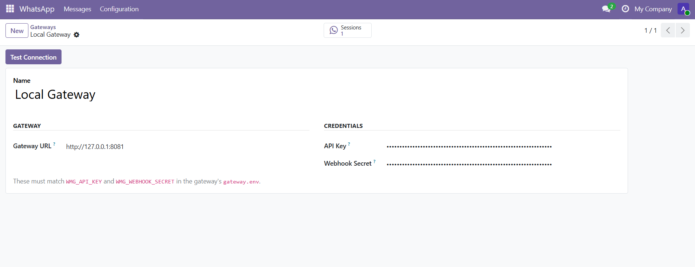
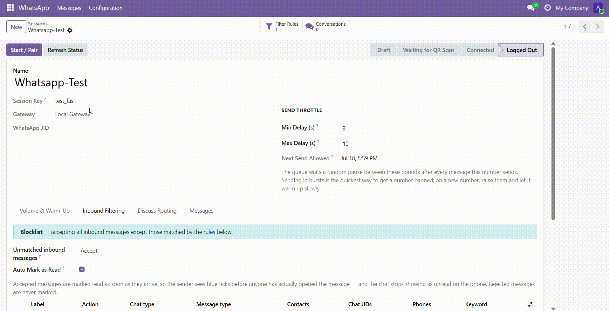
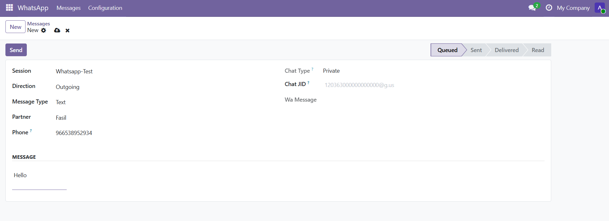
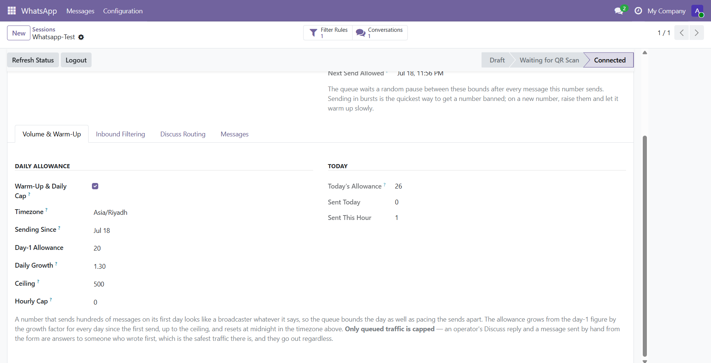
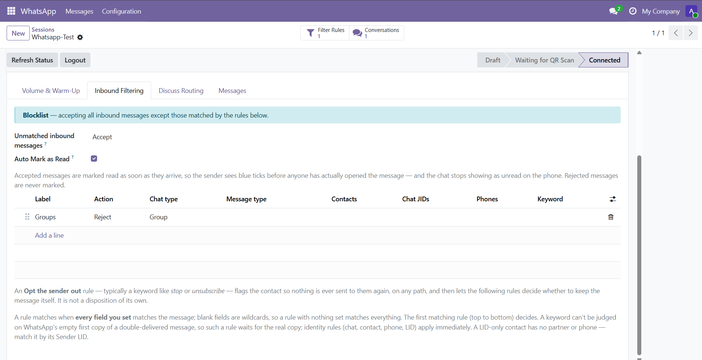

Bytesraw
Automate you success
🛡 Need help?
Got a question, found a bug, or need a custom enhancement? Get in touch — happy to help.
Contact Support →
© 2026 Bytesraw · Whatsmeow WhatsApp Connector · Licensed under LGPL-3
Send and receive WhatsApp straight from Odoo through one or more self-hosted whatsmeow gateways — no Cloud API, no template approval, no session window.
Whatsmeow WhatsApp Connector drives one or more self-hosted whatsmeow gateways straight from Odoo — send and receive WhatsApp messages without Meta's Cloud API, without template pre-approval, and without a 24-hour session window. Each gateway connection is one endpoint, each session is one WhatsApp number paired by QR, and every inbound message is logged, matched to a contact, and posted where you can act on it.
It is built for teams who want to own their WhatsApp channel: a support desk running a shared number, a sales team messaging leads, or any business that needs WhatsApp inside Odoo without routing customer conversations through a third-party SaaS. Deliverability safeguards — pacing, warm-up ramps, daily caps, opt-out handling, and number validation — are part of the core, because staying unbanned on the unofficial protocol is the whole game.
Connect Odoo to your own gateway instead of a paid WhatsApp Business API. No per-message fee, no template approval queue, no session window — a message is just a message, sent from a number you control.
Bursting is what gets a number banned, so the queue paces every send, ramps a new number's daily allowance up over its first weeks, and honours per-contact opt-outs and "not on WhatsApp" answers — before a single message leaves.
Incoming messages are matched to the right contact by phone number, downloaded with their media, and posted to that contact's chatter. Per-session rules decide what to accept, and read receipts can go out automatically.
Register any number of gateway endpoints, each with its own URL, API key, and webhook secret, and pair any number of WhatsApp numbers beneath them. A one-click Test button confirms a gateway is reachable and its key is valid.
Start a session and Odoo renders the pairing QR right on the form. A scheduled action keeps each session's status current — Starting, Waiting for QR, Connected, Disconnected, Logged Out — so you always know which numbers are live.
Compose text, images, video, audio, documents, or stickers. Reply to an inbound message to quote it in WhatsApp, send voice notes that play inline, and target either a private chat or a group.
Outgoing messages go onto a throttled queue that spaces each number's sends apart, takes turns between numbers so one busy session never stalls another, and carries an idempotency key so a crash can never send the same message twice.
Cap how many queued messages a session sends per day, starting low for a new number and growing automatically toward a ceiling you set. An hourly cap stops a day's allowance leaving at once, rolling over at the number's own local midnight.
A contact who asks to stop is flagged, and no path can ever message them again — queue, composer, server action, or Discuss reply. Separately, the gateway is asked which queued numbers are on WhatsApp, so dead numbers are skipped.
Every session carries ordered accept/reject rules matched on chat type, message kind, sender, phone, chat JID, LID, or a keyword. Accept-by-default with reject rules is a blocklist; reject-by-default with accept rules is an allowlist.
An accepted message is matched on the last ten digits of the number and posted to the contact's chatter with media attached and voice notes playable inline. Group messages are labelled so they never read as a private message.
Installing the add-on from the Apps list is the standard Odoo step. What is specific to this module is deploying the whatsmeow gateway first — the self-hosted service the connector talks to.
The gateway is a single Go binary that speaks the WhatsApp Web protocol on one side and HTTP+JSON to Odoo on the other. An installer sets it up as a systemd service on Debian 12/13 or Ubuntu 22.04/24.04.
Copy this repository to the gateway host — running it on the same machine as Odoo is the simple case.
From the repository root, run sudo ./install.sh.
It prints a Gateway URL, API Key, and Webhook Secret — keep these for the connection record.
One gateway can host several WhatsApp numbers, and one Odoo can drive several gateways. Re-running the installer safely rebuilds and restarts the service, keeping your credentials and paired sessions. See DEPLOY.md for options such as a custom port, a cross-host webhook URL, TLS, and backups.
All setup lives under WhatsApp → Configuration, visible to WhatsApp Administrators.
Gateways → New: enter the Gateway URL, API Key, and Webhook Secret, then Test.
Configure the gateway to POST events to /whatsmeow/webhook with the same secret.
Sessions → New: set a Session Key, pick the gateway, Start, and scan the QR.
Set send delays, warm-up caps, inbound filter rules, and auto mark-as-read.
Connecting a gateway, pairing a number, sending a message, and keeping a number healthy.
URL, API key, and webhook secret in one place.

Scan the QR and the session comes online.

Text or media, from any session.

Ramp a new number's daily allowance safely.

Allowlist or blocklist, per session.

From connecting a gateway to keeping a number healthy.
Register your self-hosted gateway so Odoo can talk to WhatsApp through it.
Bring a WhatsApp number online as a session you can send and receive from.
Send a text or a file to a WhatsApp contact.
Protect a number's reputation so it keeps sending.
This module talks to an unofficial WhatsApp protocol through a self-hosted gateway, so a few things are outside Odoo's control by design.
WhatsApp can rate-limit or ban a number that behaves like a bulk sender. Pacing, warm-up, opt-out, and number validation reduce that risk, but no safeguard can guarantee a number is never restricted — warm up new numbers slowly and keep your lists clean.
Number-registration lookups are rationed by the gateway on purpose. A number Odoo has not yet been able to check is treated as sendable, not as invalid, so a fresh contact is never permanently blocked by a missing answer.
Quick answers to the most common questions.
No. This module connects to your own self-hosted whatsmeow gateway over the unofficial Web protocol. There is no template approval, no per-message fee, and no 24-hour session window.
Yes. Register as many gateway connections as you like and pair as many sessions beneath them as you need. Each session has its own pacing, warm-up, and inbound rules — one number's reputation never affects another's.
By the last ten digits of the sender's phone number, compared against your contacts' phone fields regardless of formatting. A message from an unknown number is still stored; it simply has no contact attached.
Only members of the WhatsApp / Administrator group. The API key and webhook secret are restricted fields — a regular WhatsApp user can send and receive without ever being able to read a gateway's credentials.
The message is marked in error with the reason, and the rest of the queue keeps moving. You can retry it once the gateway is healthy; the idempotency key ensures a message that already reached WhatsApp is never sent twice.
A clean record of every release.
Got a question, found a bug, or need a custom enhancement? Get in touch — happy to help.
Contact Support →